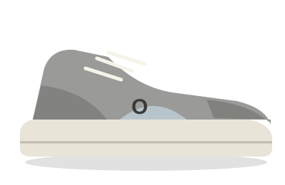
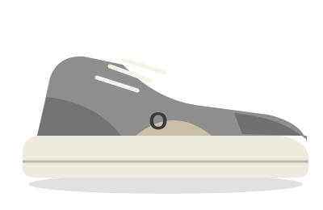
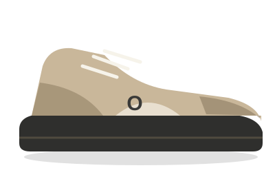
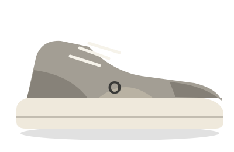
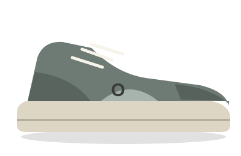
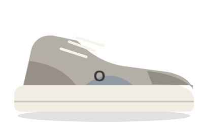

Diseño retro, comodidad moderna y actitud en cada paso. Inspirado en la cultura de las calles.
Ver ColecciónEn Old Balance reinterpretamos las siluetas clásicas del calzado deportivo para adaptarlas a la cultura urbana de hoy.
Creemos que el verdadero estilo no caduca. Tomamos la esencia retro y la combinamos con materiales y comodidad modernos.
Nuestros tenis destacan por detalles en gamuza, suelas de alta tracción y un ajuste pensado para caminar la ciudad todo el día.
Gamuza gastada de fábrica y siluetas de skate que parecen heredadas. Seis modelos, todos con envío a todo México.

Gamuza gris ceniza y suela color crema. Se ve como si ya hubiera ido a tres bodas.
$1,899 MXN
Lo quiero
Gamuza premium con mediasuela acolchada. Pensado para caminar sin prisa.
$2,999 MXN
Lo quiero
Perfil bajo, suela vulcanizada y puntera reforzada para aguantar el grip tape.
$1,699 MXN
Lo quiero
Malla y gamuza en tono topo. Un clásico de ayer que sigue combinando hoy.
$2,599 MXN
Lo quiero
Lengüeta acolchada y suela plana en verde salvia. Aguanta rampas y banquetas rotas.
$1,599 MXN
Lo quiero
Gris claro con detalles azules. Lo mismo de siempre, pero en tu talla.
$2,799 MXN
Lo quieroNo hay tenis en esta categoría por ahora.
Envíos, cambios y tallas. Si no encuentras tu duda, escríbenos desde la sección de contacto.
De 3 a 6 días hábiles en la mayor parte del país. En zonas remotas puede tardar hasta 10 días hábiles.
El envío es gratis en compras desde $1,500 MXN. Por debajo de ese monto cuesta $149 MXN.
Sí. Cuando salga tu pedido te enviaremos por correo el número de guía y el enlace de seguimiento.
Sí, pero la gamuza cede un poco con el uso. Si estás entre dos tallas, elige la menor en los modelos de gamuza y la mayor en los de skate.
Tienes 30 días desde que recibes el pedido. Los tenis deben estar sin uso y con su caja original.
Usa un cepillo de cerdas suaves en seco y evita mojarlos. Si se manchan, una goma de borrar blanca quita la mayoría de las marcas.